As 40 fotos do acervo, cada uma com um número que não muda. Cite a foto por esse número — troca a 09 pela 14 — e não há como errar de imagem.
Como ler
Ficha tracejada = ainda não entrou em nenhuma página do site.
A linha em mono no pé mostra o nome do arquivo dentro de site/assets/img/.
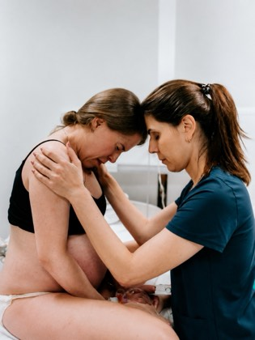
Marina apoiando uma gestante de pé, testa com testa
em usoamara · blog · especialidades · eventos · index
hero-acolhimento.webp · amara/1.webp
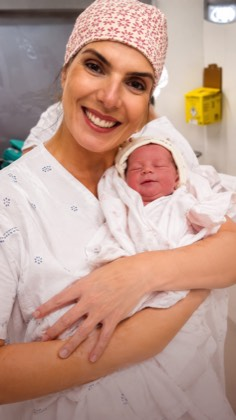
Marina de touca com um recém-nascido no colo, sorrindo
livreainda não entrou no projeto
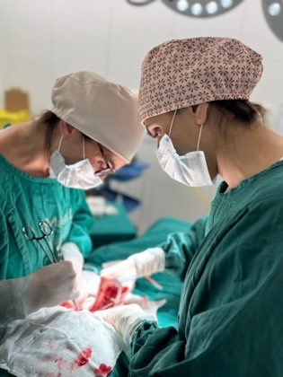
Centro cirúrgico, duas profissionais em procedimento
em usoblog · blog-post-consulta · blog-post-material · blog-post-newsletter · blog-post-podcast · ebooks · especialidades · formacao-profissional
cirurgia.webp
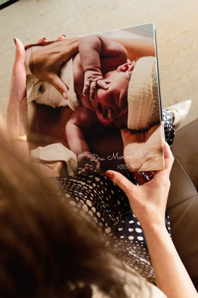
Mãos folheando o álbum de fotos de um parto
livreainda não entrou no projeto
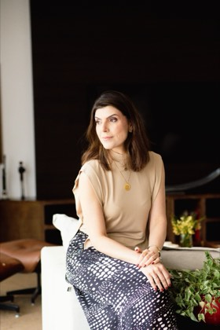
Marina sentada em ambiente claro, fora do hospital
em usoblog · blog-post-consulta · blog-post-material · blog-post-newsletter · blog-post-podcast · contato · especialidades · livros
planejamento.webp
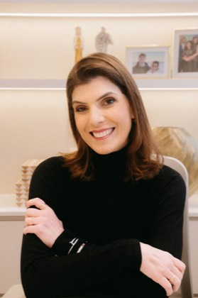
Retrato de Marina no consultório, blusa preta
em usoindex
marina-sobre.webp
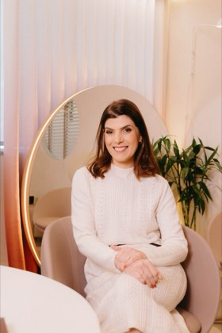
Marina em poltrona, espelho iluminado ao fundo
em usocontato · especialidades · eventos · formacao-profissional · livros
consultorio.webp
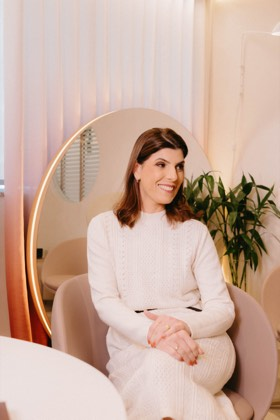
Variante da 07 — Marina na poltrona, olhando de lado
livreainda não entrou no projeto
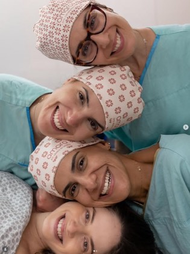
Quatro profissionais de touca, close, sorrindo
em usoamara
amara/9.webp
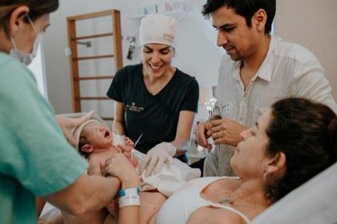
Equipe entregando o recém-nascido ao casal
em usoindex
amara/10.webp
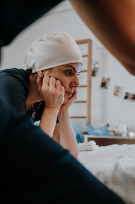
Gestante em trabalho de parto, mão no rosto
livreainda não entrou no projeto
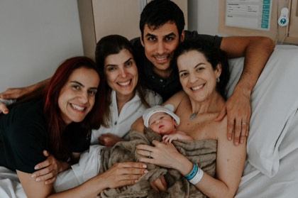
Casal, bebê e duas profissionais no quarto
em usoamara · index · livros
familia.webp · amara/12.webp
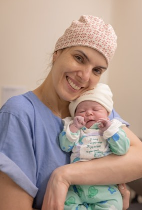
Marina de touca segurando um recém-nascido
livreainda não entrou no projeto
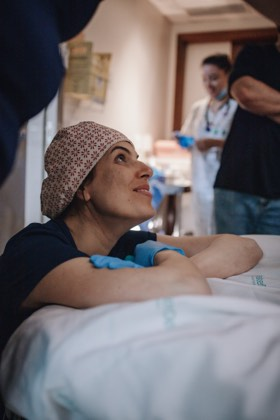
Mulher deitada na maca, olhando para cima
livreainda não entrou no projeto
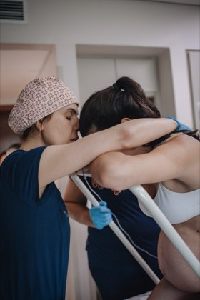
Abraço durante o trabalho de parto, apoio em pé
em usoamara · especialidades · index · sobre
abraco.webp · amara/15.webp
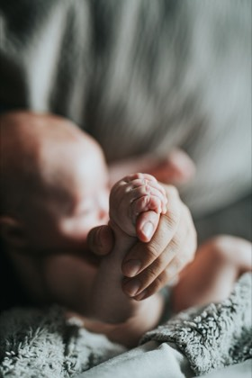
Mãozinha de recém-nascido segurando um dedo
em usoblog · blog-post-consulta · blog-post-material · blog-post-podcast · eventos · livros · materiais-gratuitos
maos.webp
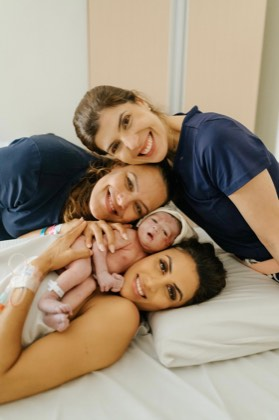
Três mulheres deitadas com o bebê na cama
em usoamara · index
comunidade.webp · amara/17.webp
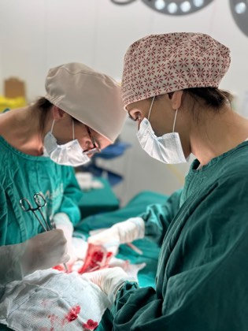
Variante da 03 — centro cirúrgico, outro ângulo
livreainda não entrou no projeto
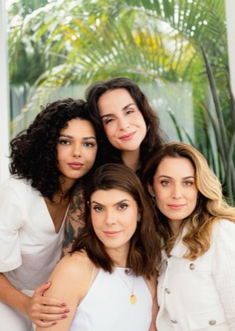
Quatro mulheres em pé, ambiente claro com plantas
em usoamara · ebooks · especialidades · index · materiais-gratuitos
saude-da-mulher.webp · amara/19.webp
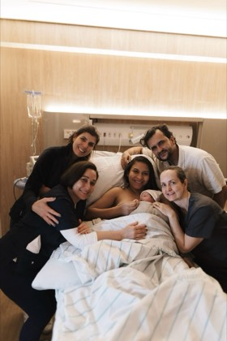
Cinco pessoas com o bebê no quarto da maternidade
em usoamara · blog · blog-post-consulta · blog-post-material · blog-post-newsletter · blog-post-podcast · ebooks · especialidades · materiais-gratuitos
pos-parto.webp · amara/20.webp
Marina no estúdio do podcast, de fone e óculos, falando ao microfone
em usopodcast
podcast-estudio-2.webp
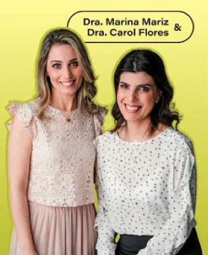
Marina e Carol Flores lado a lado sobre fundo neon, com o selo dos nomes
importadano projeto, mas fora de todas as páginas
podcast-apresentadoras.webp
Gestante de perfil segurando a barriga, campo ao entardecer
em usolivros
livros-gestacao.webp
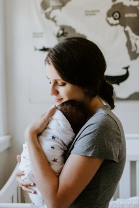
Mãe com recém-nascido no colo, quarto claro
em usolivros
livros-puerperio.webp
Casal grávido ao entardecer com a foto do ultrassom, tons neutros
em usocursos
cursos-casal.webp
Gestante sentada em poltrona de vime, mãos na barriga
em usocursos
cursos-gestante.webp
Mãe sorrindo com recém-nascido no colo, luz suave
em usocursos
cursos-bebe.webp
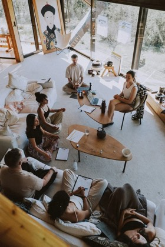
Roda de conversa em sala clara, pessoas sentadas em círculo
em usoeventos
eventos-roda.webp
Gestante de perfil em tons neutros, fundo claro de estúdio
em usoeventos
eventos-imersao.webp
Mulher em chamada de vídeo na mesa de trabalho, parede de tijolo
em usoeventos
eventos-aula.webp
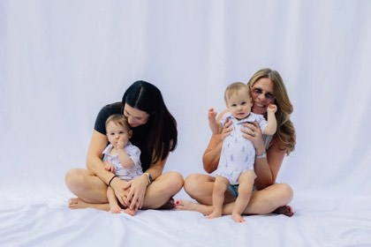
Duas mães sentadas com os bebês no colo, fundo branco
em usoeventos
eventos-maes.webp
Mulher lendo em leitor digital deitada na cama, manta bege
em usoebooks
ebooks-leitura-digital.webp
Gestante lendo livro sentada junto à janela, plantas ao fundo
em usoebooks
ebooks-gestante-leitura.webp
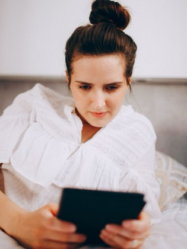
Mulher de camisa branca lendo em tablet, luz natural
em usoebooks
ebooks-tablet.webp
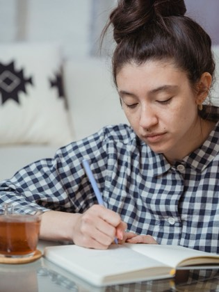
Mulher anotando em caderno em casa, xícara de chá ao lado
em usomateriais-gratuitos
materiais-anotacoes.webp
Mãos preenchendo checklist em caderno com post-its na mesa
em usomateriais-gratuitos
materiais-checklist.webp
Gestante sentada no sofá lendo no celular, notebook ao lado
em usomateriais-gratuitos
materiais-gestante-celular.webp
Dois médicos discutindo um caso em tablet, jalecos brancos
em usoformacao-profissional
formacao-discussao.webp
Dois profissionais de touca e máscara conferindo prancheta
em usoformacao-profissional
formacao-equipe.webp
Médico anotando durante consulta, paciente de costas
em usoformacao-profissional
formacao-consulta.webp